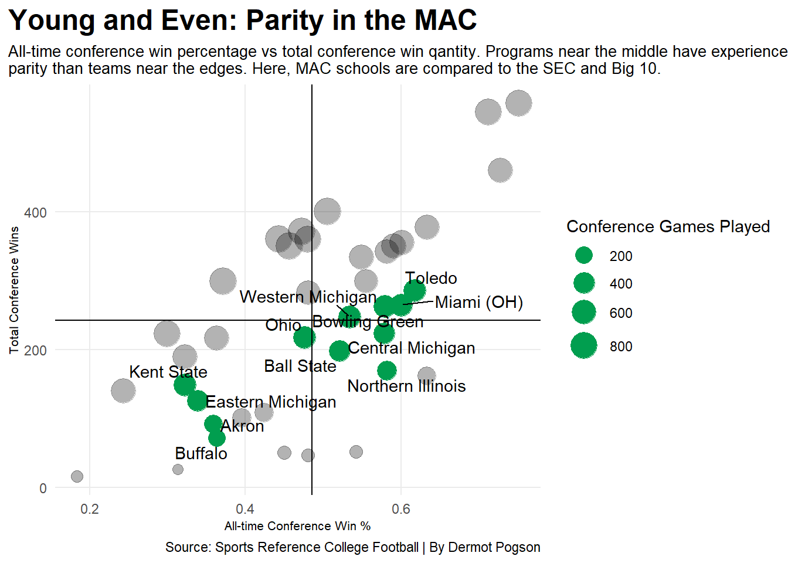
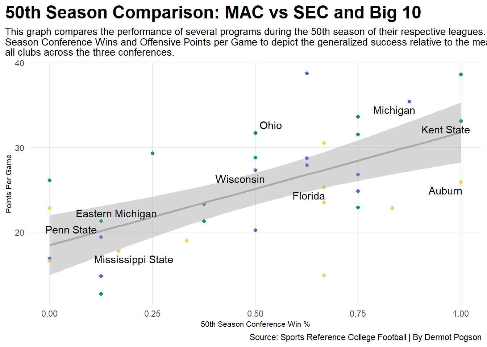

I love the MAC. I want you to love the MAC. While I cannot make you watch their games or follow their programs, what I can do is provide you with evidence to why you should be paying at least a little more attention to America’s Greatest College Football Conference. So that is what we are going to do today.
Some of you might be confused as to what it is I am talking about. And that is okay. Here is a graph showing why it is that yo might not be familiar with the MAC.
SECSchools<-SECSchools |>filter( To =="2023") |>rename(Games="G...6",Wins="W...7",Losses="L...8",Ties="T...9",Pct="Pct...10",ConGames="G...11",ConW="W...12",ConL="L...13",ConT="T...14",ConPct="Pct...15",BowlGames="G...16",BowlW="W...17",BowlL="L...18",BowlT="T...19",BowlPct="Pct...20")B1GSchools<-B1GSchools |>filter( To =="2023") |>rename(Games="G...6",Wins="W...7",Losses="L...8",Ties="T...9",Pct="Pct...10",ConGames="G...11",ConW="W...12",ConL="L...13",ConT="T...14",ConPct="Pct...15",BowlGames="G...16",BowlW="W...17",BowlL="L...18",BowlT="T...19",BowlPct="Pct...20")B1GSchools<-B1GSchools |>select(-starts_with("...25")) |>mutate_at(vars(-School), as.numeric)MACSchools<-MACSchools |>mutate_at(vars(-School), as.numeric)SECSchools<-SECSchools |>mutate_at(vars(-School), as.numeric)MACSchools<-MACSchools |>filter( To =="2023") |>rename(Games="G...6",Wins="W...7",Losses="L...8",Ties="T...9",Pct="Pct...10",ConGames="G...11",ConW="W...12",ConL="L...13",ConT="T...14",ConPct="Pct...15",BowlGames="G...16",BowlW="W...17",BowlL="L...18",BowlT="T...19",BowlPct="Pct...20")AllSchools<-rbind(MACSchools, B1GSchools, SECSchools)SECLOBF<-SEC50 |>summarize( School, Off, ConPct)B1GLOBF<-B1G50 |>summarize( School,Off=OffPPG, ConPct)MACLOBF<-MAC50 |>summarize( School, Off, ConPct)LOBF<-rbind(MACLOBF, B1GLOBF, SECLOBF)names<-LOBF |>filter( School =="Kent State"| School =="Ohio"| School =="Eastern Michigan"| School =="Michigan"| School =="Wisconsin"| School =="Penn State"| School =="Auburn"| School =="Florida"| School =="Mississippi State")ggplot() +geom_dumbbell(data=dimbonk, aes(y=reorder(Conference, Differential), x=LossesPerYear, xend=WinsPerYear),size=2,colour="grey",colour_x="red",colour_xend="green")+labs(title ="FBS Conference Win Differential Per Year",subtitle ="Wins are on the right, losses are on the left. The side to which the line is heavy \ndisplays if it is expected to win or lose more any given year. They in order of \ntotal differential.",x ="Win-Loss Differential",y ="",plot.title.position="plot")+theme_minimal()+theme(plot.title =element_text(size =18, face ="bold"),plot.title.position="plot",axis.title =element_text(size =8), plot.subtitle =element_text(size=10), panel.grid.minor =element_blank())
This graph tells us a lot of things, but I would like to highlight 3 of them. 1) The MAC has a lot lower win differential than the Power 5 Conferences. It has a -5.5 game differential, meaning as a conference they lose around 5 and a half games per year more than they win. This is likely why you probably don’t follow them too closely and may be a reason many casual football fans count them out. This, however is in truth a very misleading statistic. Many larger programs like to use MAC teams as tune up games because they are smaller institutions that need the money. When you recognize that the over funded monster conferences at the top are working with a much better hand and refuse to let it sway your opinion on the validity of any given program, you begin the journey of opening your mind to what football is actually supposed to be all about. This leans into the second point to consider: 2) MAC teams play games that they are not expected to win. None of this “oh we gotta protect our record for the post season” whiner crock of bull. The MAC represents the true essence of football. You can shove your hyper commercialized Power 5 teams that play at most 5 games they care about in any given year. Every week is a battle to the death in the MAC and, as their differential shows, somebody has to lose. But that only makes the glory of victory even sweeter. On any given Saturday, any given team could squeak out a win. When every week is a dogfight, you get something even better than dominance: 3) Parity. The greatest word in sports. This alludes to the possibility of teams having a better chance at beating one another. If the conference is losing as a whole, surely the teams themselves must be losing also, making the odds much more favorable that whatever opponent you are facing in a mac conference game has lost to another team at some point this season. The balance of strengths and weaknesses creates a more strategic game relying on learning from mistakes, not just winning all the time or losing all the time.
Let’s focus on that last part for a second. Parity is a major selling point in the MAC. Why don’t we take a look at how the MAC shakes up relative to larger conferences like the SEC or Big 10.
Code
ggplot() +geom_point(data=AllSchools, aes(x=ConPct, y=ConW, size=ConGames),alpha = .3) +scale_size(range =c(3, 8), name="Conference Games Played")+geom_point(data=MACSchools,aes(x=ConPct, y=ConW, size=ConGames),color="#019E4F")+geom_vline(xintercept =0.4857) +geom_hline(yintercept =242.4)+geom_text_repel(data=MACSchools,aes(x=ConPct, y=ConW, label=School))+labs(title ="Young and Even: Parity in the MAC",subtitle ="All-time conference win percentage vs total conference win qantity. Programs near the middle have experienced more \nparity than teams near the edges. Here, MAC schools are compared to the SEC and Big 10.",x ="All-time Conference Win %",y ="Total Conference Wins",plot.title.position="plot")+theme_minimal()+theme(plot.title =element_text(size =18, face ="bold"),plot.title.position="plot",axis.title =element_text(size =8), plot.subtitle =element_text(size=10), panel.grid.minor =element_blank())

This showcases that there is indeed parity within the MAC on a more universal level than there is in either the Big 10 or the SEC. Many teams are hovering around the mean for win percentage, with the exception of the four teams which just do not win as often. Virtually all of the MAC is on the smaller side for quantity of games played. This is an indicator that the MAC is at an earlier stage in its life cycle as a younger conference. Let’s take a look at the differences between these conferences when you level the playing field of age.
Quick story, based on what actually went down:
In 1892, somebody said “man that Grover Cleveland is having a heck of an election campaign, maybe we oughta create a new collegiate athletic conference!” They made a conference and it was called the Western Conference. It was not until 1953 that they became the actual Big 10 conference. So for the rest of this article, we are going to be treating 1953 as the start date, since if you asked anybody in the 40s about the big 10 they would lock you in the loony bin for “talking crazy” before arming, training, and sending you to liberate a German occupied Europe.
Similarly, in 1933 somebody said “it is the heart of the great depression and things are really starting to pop off politically in Europe, maybe we need a new athletic conference!” They created the Southeastern conference, or as we now know it, the SEC.
You see, both of these powerhouses have been doing what it is that they do very well for a very long time. With more seasons of play naturally you would expect them to grow and become better organized and supported over time. I think it is important that we level the playing field if we want to compare conferences. The MAC was founded in 1962. That is a pretty substantial false start for the big guys. Instead of comparing the modern MAC to the Modern SEC and B1G, we should use a benchmark of duration. For this example, we’ll go with the 50th season of each respective conference. Specifically, that is 1983 for th SEC, 2003 for the B1G, and 2012 for the MAC.
Code
ggplot()+geom_point(data=MAC50, aes(x=ConPct, y=Off), colour="#019E4F")+geom_point(data=B1G50, aes(x=ConPct, y=OffPPG), colour="royalblue")+geom_point(data=SEC50, aes(x=ConPct, y=Off), colour="#ffd046")+geom_smooth(data=LOBF, aes(x=ConPct, y=Off), method="lm", colour="darkgrey")+geom_text_repel(data=names,aes(x=ConPct, y=Off, label=School))+labs(title ="50th Season Comparison: MAC vs SEC and Big 10",subtitle ="This graph compares the performance of several programs during the 50th season of their respective leagues. It uses \nSeason Conference Wins and Offensive Points per Game to depict the generalized success relative to the mean of \nall clubs across the three conferences.",x ="50th Season Conference Win %",y ="Points Per Game",plot.title.position="plot")+theme_minimal()+theme(plot.title =element_text(size =18, face ="bold"),plot.title.position="plot",axis.title =element_text(size =8), plot.subtitle =element_text(size=10), panel.grid.minor =element_blank())

The thing that stands out to me about this comparison is just how comparable they are. Compared to the average line, many of the MAC Team have a higher ppg than much of the SEC. There is a very even distribution in conference win percentage. If you did not have the context of knowing which teams were which, it would be almost entirely impossible to differentiate these teams by Conferences.
And ultimately, that is the point. Given the life-cycle of the conference, when all other things are equal, the level of competition within the MAC is right on track. That makes right now a perfect opportunity to jump on the MAC train! This is a growing conference and one you are going to want to stick around to see develop.
I hope this has been informative, and you now feel a bit more familiar with who the MAC is and why they matter. What the stats won’t tell you, however, is just how much fun being a fan of the MAC actually is. They have run heavy teams. They have air raid teams. They have NFL Prospects. They have walk-ons from suburban Cleveland, Ohio. They have tradition and rivalry, love, hate, the joy of victory, the agony of defeat. Hell, the University of Toledo even has had a missile at their stadium aimed directly at the 50 yard-line of Bowling Green’s stadium since 1961. If that doesn’t get your pulse up you might need a doctor.
Long live the Mid-American Conference. Now go enjoy some maction.